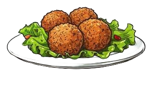

1-Koshary
A beloved national dish, Koshari is a hearty vegetarian meal made with a mix of rice, lentils, chickpeas, and pasta, topped with a spicy tomato sauce and crispy fried onions. It's a flavorful and satisfying street food staple
2-ful medames
A classic Egyptian breakfast dish, Ful Medames is made from slow-cooked fava beans seasoned with garlic, lemon juice, and olive oil. It's often served with bread, eggs, and vegetables.
3-Molokhia
Molokhia is a green leafy vegetable (similar to spinach) cooked into a thick soup or stew, often with garlic, coriander, and chicken or rabbit. It's typically served over rice or with bread.
4-Mahshi
Mahshi refers to vegetables like zucchini, eggplant, or grape leaves stuffed with a mixture of rice, herbs, and sometimes minced meat. It's then cooked in a flavorful broth.
5-Falafel
Unlike the chickpea-based falafel found in other Middle Eastern countries, Egyptian Taameya is made from fava beans, mixed with herbs and spices, and deep-fried to crispy perfection. It's often served in pita bread with tahini sauce and salad.